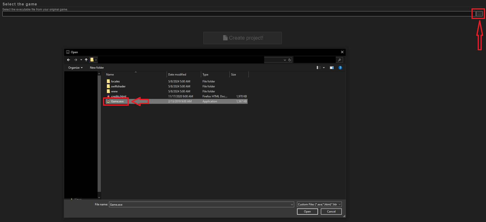
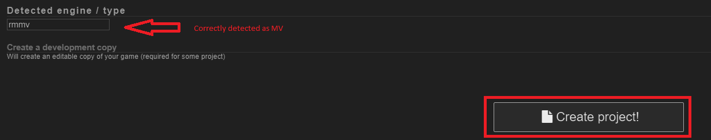
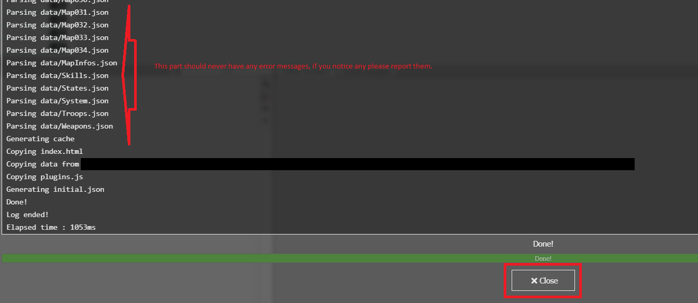
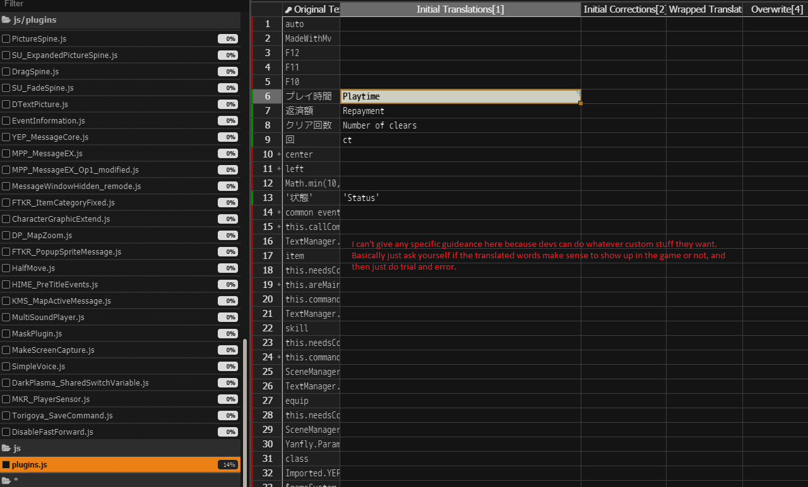
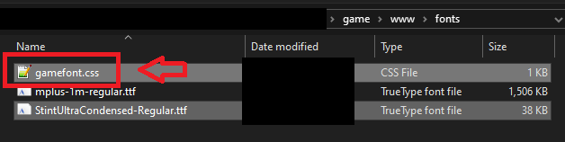
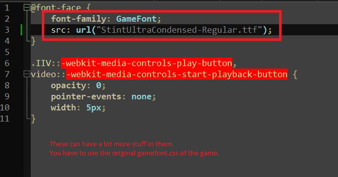

MV games are HTML5 applications: the game data is plain JSON inside the www/data folder, scripts and plugins are JavaScript. SLR Translator parses those files directly, without external tools. If you have not created a project yet, start with Your First Translation Project.
Start a New Project and choose RPG Maker XP, VX, Ace, MV & MZ Parser.Select the game, pick the game's executable or its index.html. The wizard reports rmmv under Detected engine / type — see Engine Detection.Create project!. A staging copy of the game data is built, plugins are collected right after creation, and the project opens in the editor.
Select the RPG Maker parser entry in the wizard.

Pick the MV game executable; the detected type appears automatically.

After creation: review any reported errors, then close the summary.
Every JSON file in www/data is read (except Animations.json and Tilesets.json, which carry no translatable text):
| Source | Extracted text |
|---|---|
Actors.json | Names, nicknames, profiles, notes |
Items.json, Armors.json, Weapons.json | Names, descriptions, notes |
Skills.json | Names, descriptions, usage messages, notes |
States.json | Names, message lines, notes |
Classes.json, Enemies.json, MapInfos.json | Names and notes |
Map###.json | Display names, notes, and every event page's command list: Show Text, Show Choices, Scrolling Text, comments, embedded scripts and plugin commands |
Troops.json | Troop names and page event commands |
CommonEvents.json | All common event command lists |
System.json | Game title, currency unit, type and terms lists, switch and variable names |
Any other .json in data | Walked generically; every translatable string inside is registered |
Beyond the data folder, the parser also collects:
js/plugins.js is parsed as an object (only the parameters strings of each plugin entry become rows), and every enabled plugin file under js/plugins/ is opened with the ECMAScript parser so translatable strings inside plugin code can be edited. See Script Editor.GameFont source URL inside fonts/gamefont.css becomes one editable row (tagged red and font). See Fonts below.Press Export Project in the toolbar and choose Export to a folder or Export as a Zip file (see Exporting the translation). The Export Options dialog offers:
Word wrap rules: pick the tags to wrap and the maximum line length.
The translated files are written into the export target under www/data (and www/js for plugins), pretty-printed unless disabled — audio, images and the executable are not copied, so export into your own game copy.

After translation, review plugins.js and the plugin files in the editor before exporting.
MV loads its main font through fonts/gamefont.css. To swap it for a font that fits translated text (for example a condensed one):
fonts collection folder — a condensed font (sucr.ttf) ships with the tool.fonts/gamefont.css object and set the translation of the GameFont row to the font file name.gamefont.css is written into the export's fonts folder, and the font file is copied along automatically when it is found in the collection folder or the game's own fonts folder.
The game's fonts folder with an added font file.

The gamefont.css entry referencing the new font file.
.rpgmvo, .rpgmvm, .rpgmvp) are not needed for text translation and are copied along untouched.